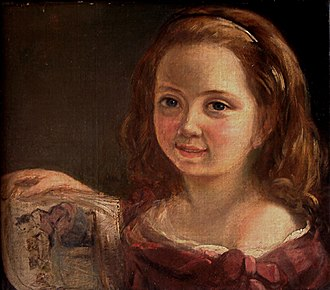
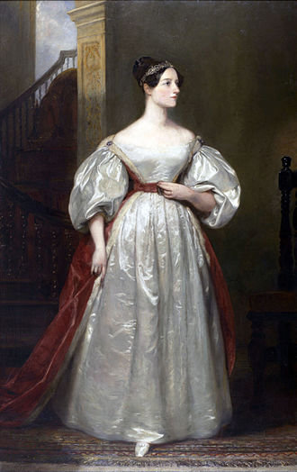

| Nombre | Augusta Ada Byron |
|---|---|
| Nacimiento | 10 de diciembre de 1815 Ver Londres (Reino Unido de Gran Bretaña e Irlanda) |
| Fallecimiento | 27 de noviembre de 1852 (36 años) Marylebone (Reino Unido) |
| Causa de muerte | Cáncer uterino |
| Sepultura | glesia de Santa María Magdalena, Hucknall |
| ocupacion | Matemática, programadora, poeta, informática teórica, inventora, traductora, escritora e ingeniera |
| Nacionalidad | Británica |
| Educación | Mary Somerville, Augustus De Morgan |
|  Retrado Ada Lovelace de niña |
 Ada Lovelace alrededor de 1836. |